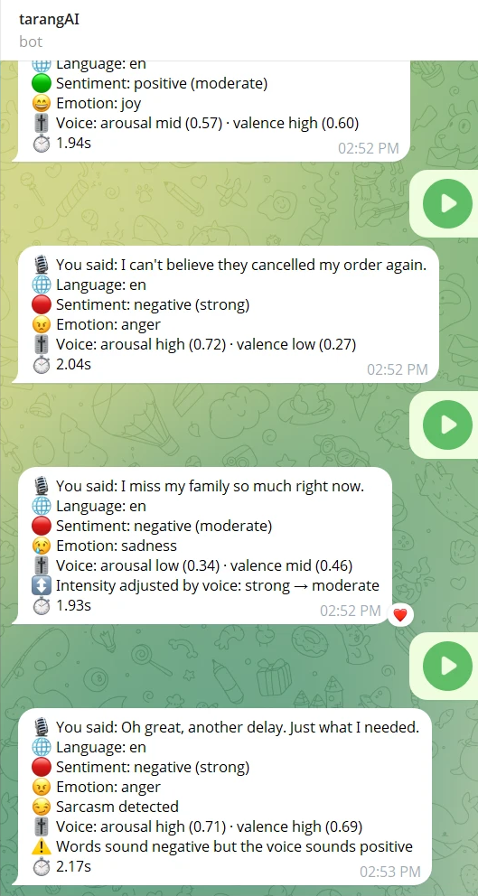
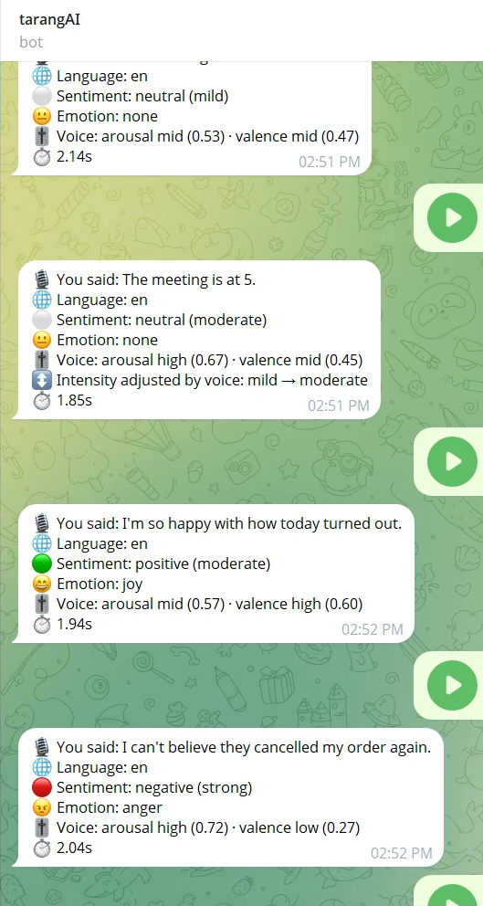
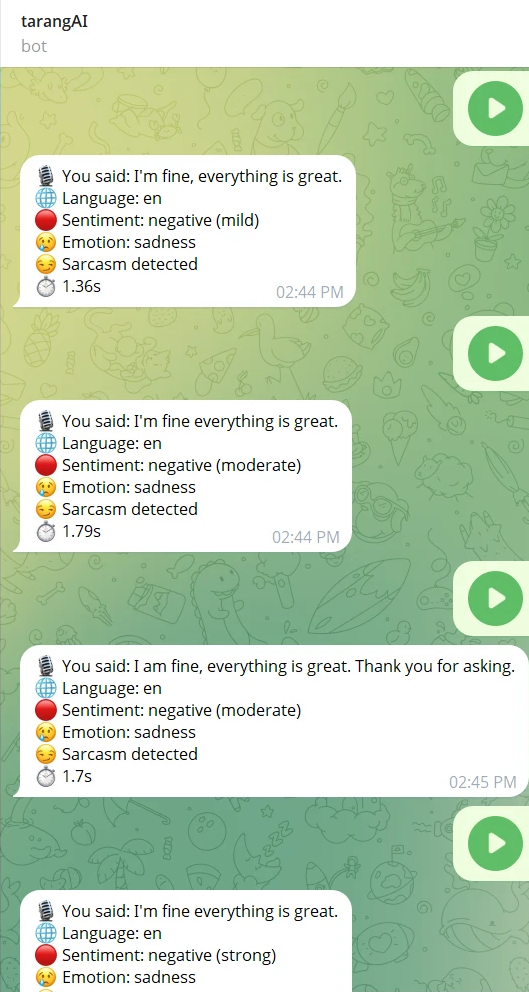

| Team member | Roll no. |
|---|---|
| Adithyan RS | B23CS2109 |
| Alona Biju | B23CS2113 |
| Alvin Binu | B23CS2114 |
| Darsan M | B23CS2125 |
People increasingly send voice notes in a mix of English and Malayalam, yet most sentiment tools assume clean English text. They also ignore a second signal that humans use constantly: the voice itself. tarangAI is a Telegram bot that accepts a voice note or a typed message, transcribes it with a language-aware speech pipeline, and returns a structured reading of the speaker's state: sentiment (positive, negative or neutral), a main emotion, an intensity level and a sarcasm flag.
The pipeline routes English speech to Whisper and Malayalam or code-mixed speech to Sarvam Saaras, and runs sentiment analysis with a Sarvam chat model directly on the original text, with no translation step that could flatten slang or tone. For English voice notes, a pretrained Hugging Face speech-emotion model additionally estimates the arousal and valence of the voice. A small, transparent fusion layer uses these to refine intensity and to flag cases where the words and the voice disagree, such as cheerful delivery over negative words, a common sign of sarcasm. The voice cut-offs were calibrated on 25 recorded clips rather than guessed.
Live tests showed correct transcripts, sentiment, emotion and sarcasm on four English voice notes, an end-to-end latency of about 1.3 to 2.4 seconds per note, and a useful disagreement flag on a sarcastic sentence. The project also documents its limits: the voice model is English-trained and calibrated on one speaker, and no formal accuracy evaluation has been run yet.
Language reality. Malayalam speakers routinely switch between Malayalam and English inside one sentence, and write Malayalam in Latin letters ("Manglish"): "movie poli aanu, climax mass". Models built for formal English handle this poorly, and voice notes make it harder still, because speech recognition for code-mixed speech is a separate problem.
Words are only half the message. The sentence "I'm fine, everything is great" can be sincere, tired or bitterly sarcastic. A text-only classifier sees identical input in all three cases and must return the same answer. Figure 4 shows this happening in our own tests. People resolve the ambiguity from tone of voice: pitch, energy and pace. A system that only reads the transcript throws that away.
Why this fits a generative-AI project. The project composes several foundation models (speech-to-text, a large language model and a self-supervised speech encoder) into one working system, and the interesting engineering is in the glue: routing by language, constraining model output to a closed vocabulary, and fusing two modalities without letting either one silently override the other.
Build a system that, given a voice note or message in English or Malayalam-English, returns a reliable and inspectable estimate of sentiment, emotion, intensity and sarcasm; uses vocal cues where a suitable model exists; and exposes every decision (transcript, language, adjustments) to the user so errors can be traced.
| Use case | How tarangAI helps |
|---|---|
| Customer feedback in Kerala | Businesses receive voice and text complaints and praise in mixed Malayalam-English. Structured sentiment and emotion make triage and trend counting possible without reading every note. |
| Support-call and voice-note triage | The intensity and the "words vs voice" flag surface calls where the customer says "okay" in a clearly frustrated voice. |
| Sarcasm-aware moderation | Cheerful delivery over negative wording is flagged, which text-only filters miss. |
| Student and course feedback | Short spoken feedback from students who are more comfortable speaking than typing, in their own mix of languages. |
| Accessibility | People who prefer speaking, or who write Malayalam in Latin script, get the same analysis quality as typists in English. |
| Research baseline | A reusable, transparent pipeline for experiments on code-mixed sentiment and text-plus-voice fusion. |
These are intended applications for the prototype. tarangAI has not been deployed or validated for any of them, and it is not a clinical or diagnostic tool (see Section 9).
Every incoming message passes through one routing function. The central design rule is that voice analysis runs only on the English (Whisper) path, because the voice model was trained on English speech. Malayalam and code-mixed audio, and typed text, skip it.
| Stage | Choice | Why |
|---|---|---|
| English speech-to-text and language check | Groq-hosted whisper-large-v3 | Fast, free-tier friendly, accurate on English. Used only for "is this English?" and English transcripts. |
| Malayalam / code-mixed speech-to-text | Sarvam saaras:v3, codemix mode, ml-IN | Built for Indian languages. Whisper is never trusted for Malayalam: it often mislabels it as another language. |
| Sentiment, emotion, intensity, sarcasm | Sarvam sarvam-105b-conversations | One short call returning a constrained line such as negative|anger|strong|no. |
| Voice emotion (English only) | audeering/wav2vec2-large-robust-12-ft-emotion-msp-dim | Outputs arousal, valence and dominance from raw audio. Dimensional output transfers better than fixed emotion words. |
| Interface | Telegram bot (python-telegram-bot) | Voice notes are native to Telegram; no app to build. |
| Field | Values | Source |
|---|---|---|
| Sentiment | positive · negative · neutral | Sarvam chat model |
| Emotion | joy, love, surprise, sadness, anger, fear, disgust, none | Sarvam chat model |
| Intensity | mild · moderate · strong | Sarvam, then possibly adjusted by voice |
| Sarcasm | yes · no | Sarvam chat model |
| Voice arousal / valence | about 0 to 1, shown as low / mid / high | Hugging Face voice model (English audio only) |
A single Whisper call listens first. If it reports English, its transcript is used and Sarvam is never called. Anything else goes to Sarvam Saaras in code-mix mode. Audio longer than 28 seconds uses Sarvam's batch API, because the real-time endpoint has a 30-second limit. Voice notes arrive as OGG/Opus and are handled without writing the audio to disk.
The first design translated code-mixed text to English before classifying it. We dropped that step: translation costs an extra model call
and can erase exactly the slang, tone and sarcasm the classifier needs. The prompt tells the model that the input may be English,
Malayalam or a mixture in native or Latin script, and asks for one line of four fields separated by |. The reply is parsed against closed lists, with
safe defaults for any field that fails to parse; if no valid sentiment is found, the step reports an error instead of guessing.
The audEERING wav2vec2 model (references 2 and 3), fine-tuned on the English MSP-Podcast corpus (reference 4), takes a 16 kHz waveform and regresses three dimensions in roughly the range 0 to 1: arousal (calm to energetic), valence (negative to positive) and dominance. Clips under 1 second are rejected as unreliable, and clips over 30 seconds are cut to the first 30. The model loads once at startup. If it fails to load, voice analysis switches itself off and the rest of the bot keeps working.
The text labels are the source of truth and are never changed by voice. Voice may only do two things, and both are shown to the user.
| Condition | Effect |
|---|---|
| Voice arousal high | Raise text intensity by one step (mild → moderate → strong) |
| Voice arousal low | Lower text intensity by one step |
| Text positive, voice valence low | Flag: "Words sound positive but the voice sounds negative" |
| Text negative, voice valence high | Flag: "Words sound negative but the voice sounds positive" |
Raw arousal and valence are continuous scores, and what counts as "high" depends on the speaker and microphone. Rather than guess thresholds, we built a small Streamlit tool with a guided 25-clip script. Part A is neutral sentences said three ways (calm, normal, loud and urgent). Part B is negative and positive sentences said with a clearly unhappy or happy tone. The tool averages the clips for each intended level, places each cut-off halfway between neighbouring averages, and refuses to suggest values if the class means are out of order.
| Dimension | Low mean (n=5) | Mid mean (n=15) | High mean (n=5) | Cut-offs set (low / high) |
|---|---|---|---|---|
| Arousal | 0.275 (sd 0.054) | 0.471 (sd 0.122) | 0.735 (sd 0.076) | 0.373 / 0.603 |
| Valence | 0.282 (sd 0.079) | 0.401 (sd 0.081) | 0.714 (sd 0.162) | 0.342 / 0.557 |
All experiments below are small, manual checks. They show that components work and expose failure modes; they are not a statistical evaluation, and no accuracy percentage is claimed.
The author recorded five English voice notes in Telegram and sent them to the bot. Figures 2 and 3 show the replies.
| What was said | Sentiment · emotion | Intensity | Arousal | Valence | Fusion outcome |
|---|---|---|---|---|---|
| "I'm so happy with how today turned out." | positive · joy | moderate | 0.57 mid | 0.60 high | no change |
| "I can't believe they cancelled my order again." | negative · anger | strong | 0.72 high | 0.27 low | no change (already strong) |
| "I miss my family so much right now." | negative · sadness | strong → moderate | 0.34 low | 0.46 mid | intensity lowered: calm voice |
| "Oh great, another delay. Just what I needed." (sarcastic) | negative · anger · sarcasm | strong | 0.71 high | 0.69 high | flag: words negative, voice positive |
| "The meeting is at 5." | neutral · none | mild → moderate | 0.67 high | 0.45 mid | intensity raised: energetic voice |


The sarcastic note is the clearest demonstration of the fusion idea. The language model read the words correctly as negative, anger and sarcasm. The voice model independently reported a positive-sounding voice (valence 0.69), so the bot added the disagreement flag. Neither signal alone says "sarcasm" as convincingly as the pair does. This is one example from one speaker, not evidence of general sarcasm detection.
To check that the two STT paths behave consistently, we generated three English clips with Windows text-to-speech, encoded them as Telegram-style Opus, and sent each through both the Sarvam path and the Whisper path.
| Clip | Sarvam transcript | Whisper transcript | Sentiment (both) |
|---|---|---|---|
| happy | "I am so happy with how today turned out. This is wonderful news. Thank you." | "I am so happy with how today turned out. This is wonderful news, thank you." | positive · joy · strong |
| neutral | "The meeting is at 5:00 in the main hall." | "The meeting is at 5 o'clock in the main hall." | neutral · none · mild |
| angry | "I can't believe they cancelled my order again. This is the worst service ever." | (identical) | negative · anger · strong |
Eight typed samples were sent straight to the sentiment step. All outputs parsed and were plausible.
| Input | Sentiment | Emotion | Intensity | Sarcasm |
|---|---|---|---|---|
| My day has been good so far. | positive | joy | mild | no |
| movie poli aanu, climax mass | positive | joy | moderate | no |
| ഇന്ന് ഒരു മോശം ദിവസമായിരുന്നു | negative | sadness | strong | no |
| wow great, the bus broke down again, thanks a lot | negative | anger | strong | yes |
| this is the worst bus service ever | negative | anger | strong | no |
| ഇന്ന് ക്ലാസ് ഉണ്ട് | neutral | none | mild | no |
| enthina ee padam kandathu, time poyi | negative | anger | moderate | no |
| ammaye orth ipol karachil varunnu | negative | sadness | strong | no |
Voice notes sometimes yield very short or odd transcripts. We tested twelve such inputs to check that the classifier does not fall back on a negative default (our prompt contains one worked example, which can bias a model). It did not: "hello", "ok", "hmm", "testing testing one two three", "you" and "I don't know what to say" all returned neutral; "I just got the job offer!" and "Thank you so much, that really helped." returned positive · joy; "I'm bored." returned negative · sadness · mild. Removing the example from the prompt gave the same sentiment on every input, with only small changes in emotion and intensity.

This screenshot was taken before the voice step was active for the author's English notes, so it is effectively the text-only baseline. The transcripts are all correct; the sentiment is the same because the words are the same. It illustrates the motivation directly: when the words do not change, a text classifier cannot see tone. The intensity wobbling between mild, moderate and strong across repeats also shows that intensity from a language model alone is unstable, one reason the voice cue is used to adjust it.
GROQ_API_KEY_3) and the Whisper failure was swallowed. The symptom was that the voice-analysis lines never appeared. Fixes: accept all three key names with failover, and log a warning when the Whisper check fails.sarvam-m, has been deprecated, and the documentation summary suggested a reasoning setting (none) that
the live API rejects with a 400 error. Probing the real endpoint showed that the larger model also spent small token budgets on hidden reasoning and returned empty answers; the -conversations variant answers directly. Lesson: test the live API, do not rely on documentation alone.post_init().DEBUG_TRANSCRIPTS=1) prints transcripts, labels and voice scores. It is off by default because transcripts are private messages.ml-IN), so Hindi-English speech is not supported.tarangAI shows that a small, inspectable pipeline can combine speech recognition, a language model and a speech-emotion model into a useful reading of code-mixed voice notes. Its main design choices (language-aware routing, no translation, closed-vocabulary outputs, and a fusion layer that adjusts intensity and flags disagreements without overriding the words) all came from problems met while building it. Live tests confirmed correct transcripts and labels on English voice notes and a working words-versus-voice flag on a sarcastic sentence. The honest next step is a labelled evaluation, which would turn these promising demonstrations into measured results.
Bibliographic details were checked against online sources (arXiv, PMLR, the Hugging Face model card and the shared-task page) in November 2026. Volume and page numbers are omitted where they could not be confirmed.